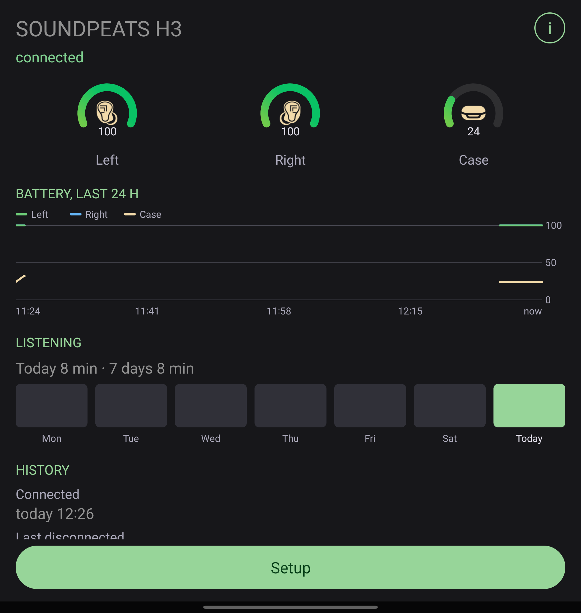
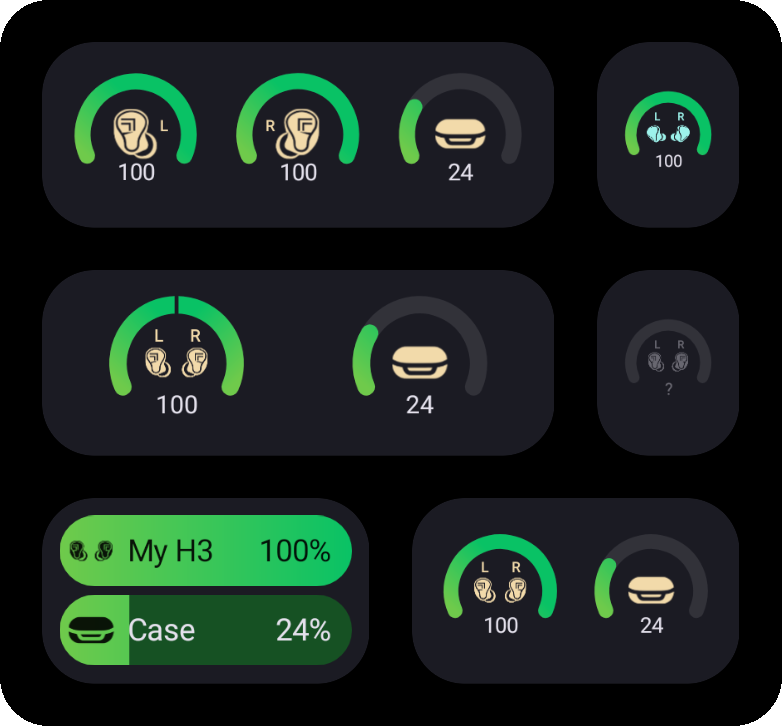
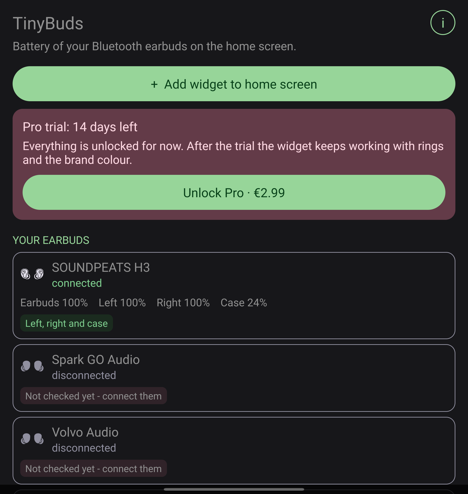
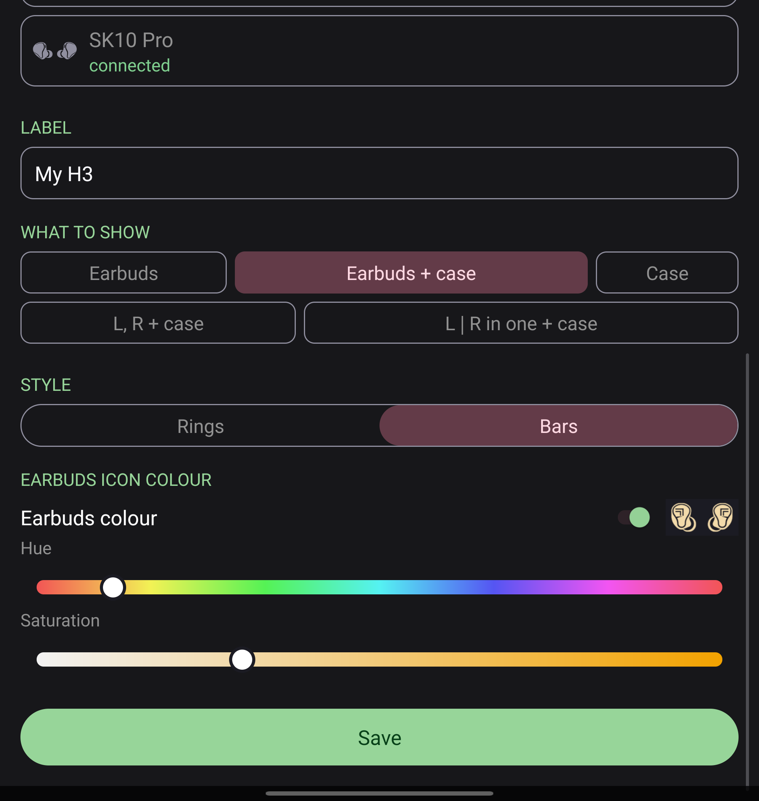
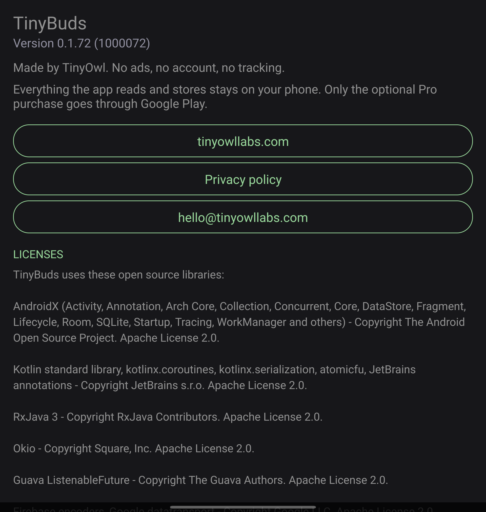

TinyOwl › TinyBuds

Your earbuds battery, at a glance.
For people who want to know if their earbuds will last the trip without opening the case or digging through Bluetooth settings. A small widget on the home screen shows how much is left, and a tap shows the rest: each bud, the case, time left and how long you listened this week.



A widget on the home screen
Add a 3×1 or 1×1 widget and pick your earbuds. It shows the battery as rings or bars and keeps the last level with how long ago it was seen, so you know where things stand even when the earbuds are in the case.
Left, right and the case
Any earbuds that report their battery show the overall level: Samsung, KZ, Sony and many others. SoundPeats earbuds such as the H3 also show the left bud, the right bud and the case, each on its own.
Show what you need
Earbuds, earbuds and case, the case alone, left and right with the case, or left and right in one block with the case. Only the options your earbuds support are offered. Add a label and pick a color to tell several pairs apart.
Time left and history
Tap the widget for the earbuds page: about how long the buds will last at today's pace, the battery for the last 24 hours, listening time for the last 7 days, and when they were last connected and charged.
Your data stays yours
No TinyBuds account, and nothing is sent to us. Everything the app reads stays on your phone. The only online service it uses is Google Play, for the optional Pro purchase.
Free with one widget. Pro is a one-time 2.99 EUR: more widgets, bars, your own colors, labels, time left and history. Every new install gets Pro free for 14 days. No ads, no tracking. Coming to Google Play.
Widgets

Screens



Try it before release
TinyBuds is in closed testing on Google Play. Send the Google account email you use on your phone, and you will be added to the tester list. All we ask: keep the app installed for at least 14 days and tell us what does not work, and which earbuds you use.